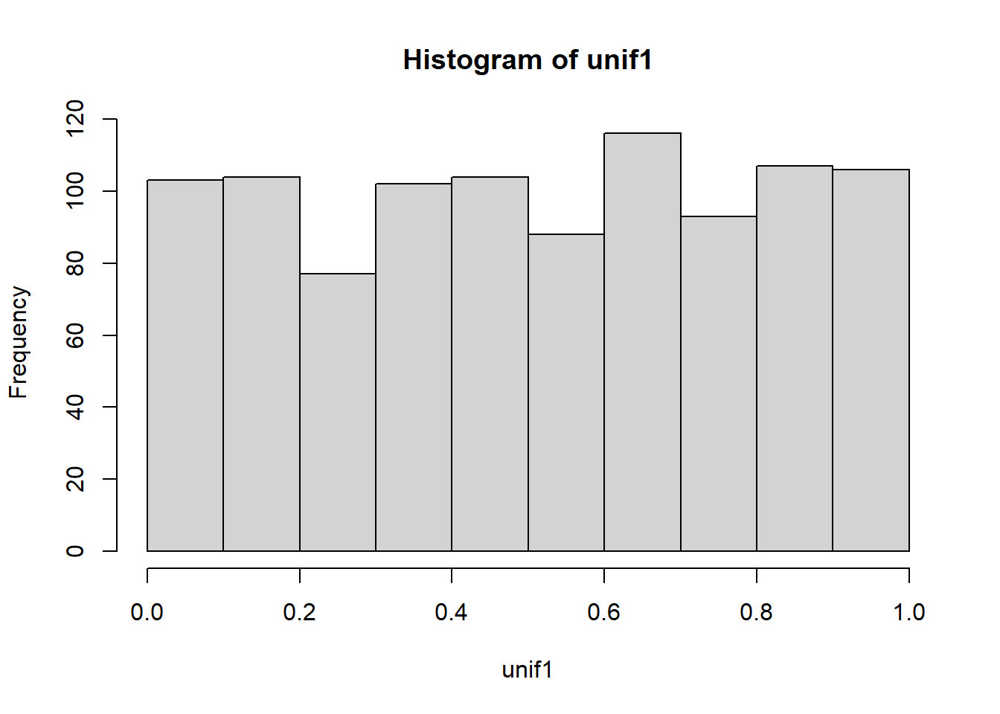
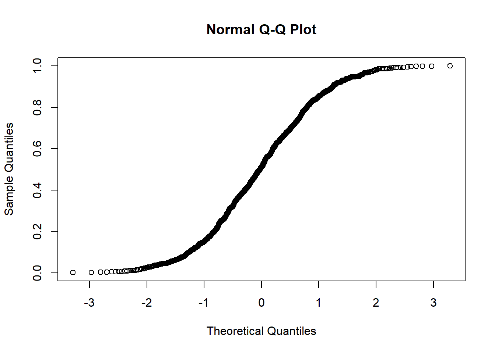
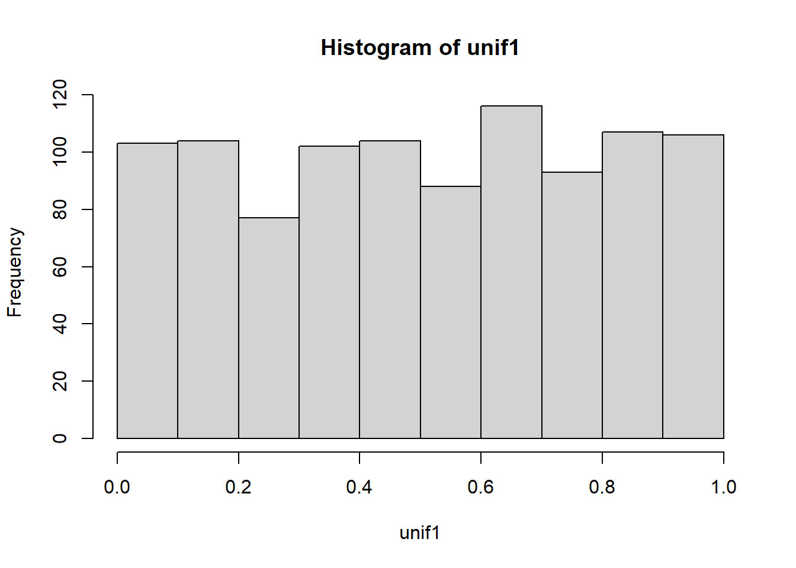
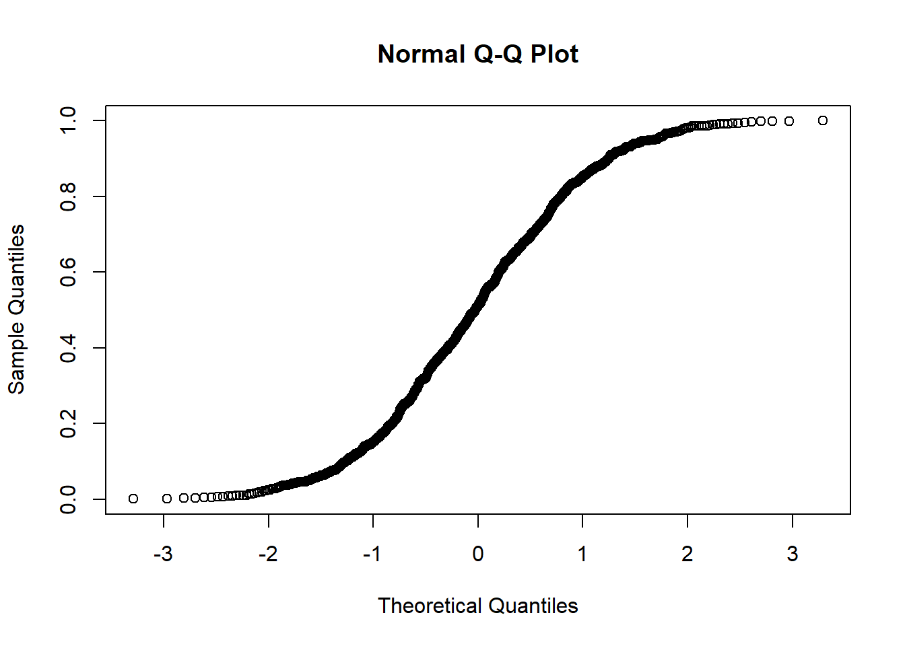
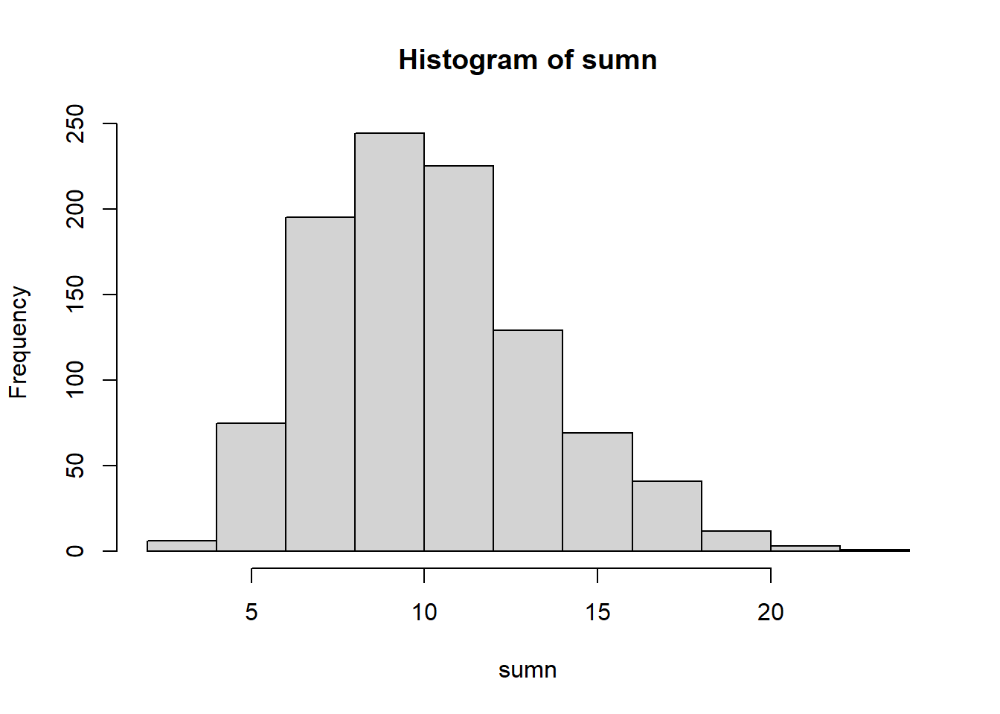
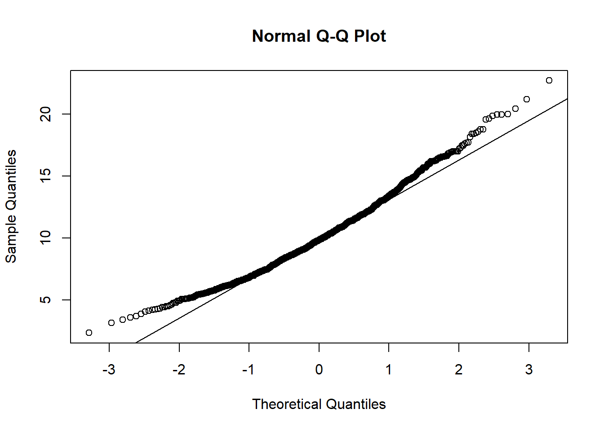

Kod
unif1 <- runif(1000,0,1)
hist(unif1)
Kod
qqnorm(unif1)
Datorlaboration 2
Syftet med dagens laboration är att du ska:
Repetera begreppen normalfördelning, väntevärde och varians för en summa (eller medelvärde) av oberoende slumpvariabler.
Du skall ha gjort följande uppgifter innan du kommer till laborationen.
Adderar man (eller beräknar medelvärdet) av flera oberoende normalfördelade slumpvariabler är summan också normalfördelad. Men vad händer om man lägger ihop flera variabler som alla är rektangelfördelade? Vilken fördelning fås om man adderar exponentialfördelade variabler?
Centrala gränsvärdessatsen (CGS) säger att om man adderar ett stort antal oberoende variabler från en godtycklig fördelning blir summan (eller medelvärdet) normalfördelad. I formler: om \(n\) är tillräckligt stort gäller att \(Z_n = X_1 + X_2 + \ldots + X_n\) är approximativt normalfördelad oavsett vilket fördelning \(X_1, \ldots, X_n\) har. Med några simuleringar ska du undersöka om detta tycks stämma, där vi utgår från några olika fördelningar för \(X\)-variablerna.
Simulera 1000 slumptal från en rektangelfördelning, \(R(0, 1)\) och lägg dem i variabeln unif1. Använd hist() och qqnorm() för att konstatera att slumptalen är rektangelfördelade och definitivt inte passar till en normalfördelning. :::
unif1 <- runif(1000,0,1)
hist(unif1)
qqnorm(unif1)
Simulera 1000 nya slumptal från en rektangelfördelning, \(R(0, 1)\) och lägg dem i variabeln unif2. Summera sedan de gamla och de nya slumptalen genom sum12 <- unif1+unif2. Resultatet är 1000 slumptal från \(Z_2 = X_1 + X_2\). Använd hist() och qqnorm() för att undersöka fördelningen hos denna summa :::
unif2 <- runif(1000,0,1)
sum12 <- unif1 + unif2
# skriv din R-kod härSkapa fler slumpvariabler unif3, unif4 och unif5 på motsvarande sätt och studera fördelningen för \(X_1+X_2+\ldots+X_5\). Verkar det rimligt att ju större \(n\) är, desto bättre kan fördelningen för summan anpassas till en normalfördelning? :::
sum12345 <- runif(1000,0,1) + runif(1000,0,1) + runif(1000,0,1) + runif(1000,0,1) + runif(1000,0,1)
# skriv din R-kod härSvar:
Pröva vad som händer då du summerar exponentialfördelade slumvariabler med väntevärde 1 (rexp(1000,1)). Hur många variabler behövs summeras innan summan kan approximeras med en normalfördelning? :::
# du kan exempelvis göra en for-loop för att utföra beräkningarna
n = 10 # antal oberoende slumpvariabler - ändra tills du tycker summan ser normalfördelad ut
sumn <- rexp(1000,1)
for(i in 1:(n-1)){
sumn <- sumn + rexp(1000,1)
}
hist(sumn)
qqnorm(sumn)
qqline(sumn)
Svar:
På 35 patienter med Hodgkins sjukdom mätte man antalet T4 celler i blodet (antal/mm3). Samtidigt mätte man motsvarande antal hos 35 patienter som hade andra sjukdomar (Non-Hodgkins). Data ligger i filen
data/lab2_filer/Hodgkindata.RData. Läs in data medload(). Du har nu fått två nya variabler Hodgkin och NonHodgkin.
load("data/lab2_filer/Hodgkindata.RData")Undersök om antalet celler i blodet är normalfördelat för de båda grupperna. :::
# skriv din R-kod härSvar:
Det kan vara intressant att jämföra grupperna genom att bilda differensen mellan de två gruppmedelvärdena. Använd dig av centrala gränsvärdessatsen för att säga något om vilken fördelning differensen i stickprovsmedelvärden har. :::
Modell:
Låt \(\mu_{Hodgkin}\) och \(\mu_{NonHodgkin}\) vara väntevärden i de två grupperna.
Låt \(\sigma^2_{Hodgkin}\) och \(\sigma^2_{NonHodgkin}\) vara varianser i de två grupperna.
Vi har två stickprov \((x_1,...,x_{35})\) och \((y_1,...,y_{35})\) från grupperna med Hodgkin respektive NonHodgkin.
Differensen mellan stickprovsmedelvärden är \(\delta = \bar{x}- \bar{y}\) och har följande fördelning
\(\delta \sim ...\) fyll i beskrivningen! Kolla med labhandledare att du har rätt fördelning
Skatta parametrarna (väntevärde och varians) i fördelningen för differensen \(\delta\). Ange värdet på parametrarna. :::
# skriv din R-kod härSvar: \(\hat{\mu}_{\delta}\)= och \(\hat{\sigma}_{\delta}\)=
Är det ett stort problem att antal celler i bloder inte är normalfördelad i de båda grupperna från början? Föreställ dig en situtation där det är ett problem och ge ett förslag på hur man kan åtgärda det? :::
Svar:
Målsättningen med denna uppgift är att du ska
träna på att hämta ett problem ur verkligheten och med hjälp av ett insamlat material konstruera en rimlig statistisk modell,
göra en kritisk granskning av modellen och dess förmåga att beskriva verkligheten,
tillämpa dina kunskaper och med hjälp av R analysera ett biostatistiskt datamaterial, och
träna på att skriftligt redovisa antaganden, modeller och slutsatser från en statistisk analys.
Vid vårt kemilaboratorium analyserar vi bland annat en rad prover från den näraliggande provtagningscentralen. Det har framkommit starka önskemål om att vissa patienter som tar prover ska kunna träffa en läkare vid samma besök och inte behöva boka in olika dagar för provtagning och läkarbesök. För att detta önskemål ska uppfyllas måste vi förstås veta hur lång tid det tar från det att provet tagits på patienten till analyssvaret är klart och undersöka om det är rimligt att låta patienter vänta på provsvar samma dag. Det finns flera moment att ta hänsyn till: provet kan få vänta på provtagningscentralen tills det blir hämtat till vårt laboratorium, det behövs en viss manuell handläggningstid av provet och slutligen har vi själva processtiden i maskinen. Dessutom har vi lite olika hanteringstider beroende på vilken dag i veckan det är och om det är för- eller eftermiddag.
I datafilerna data/lab2_filer/proverfm24.RData och data/lab2_filer/proverem24.RData finns det tider (minuter) som det tog “från patientarm till analyssvar”. Provet är på så kallad “allmän kemi” och, som ni märker, har vi har delat upp data i två filer, en för prover tagna på förmiddagen ´tidfm´ och en för prover tagna på eftermiddagen. ´tidem´. När vi gör ett histogram på dessa data ser vi att de inte verkar följa en normalfördelning. Det verkar rimligt eftersom tid har en nedre begränsning. Det innebär att vi bör använda en lämplig fördelning för att modellera väntetider i denna uppgift.
Läs igenom avsnitten Föreslagen arbetsgång och Instruktioner för rapportering före du löser uppgift 3.1 till 3.4
Hur sannolikt är det att en förmiddagspatient får vänta mer än två timmar på analyssvar?
Vi vill kunna säga att 95% av eftermiddagspatienterna kommer att ha sitt provsvar snabbare än \(y\) minuter. Vad är den statistiska termen för \(y\)? Vilket värde har \(y\) enligt den modell du har valt för eftermiddagsstider?
Det brukar vara något fler patienter på eftermiddagen jämfört med på förmiddagen. Låt oss anta att 60,% av patienter kommer på förmiddagen och resten på eftermiddagen. Hur troligt är det att ett patientprov, taget någon gång under dagen, tar mer än två timmar att analysera?
Om vi har 25 patientprover på förmiddagen, vad är sannolikheten att genomsnittstiden för dessa 25 prov överstiger en timme?
Titta på data (histogram, empirisk fördelningsfunktion). Beräkna enkla mått (medelvärde, standardavvikelse). Jämför förmiddags- och eftermiddagstider.
Sätt upp en lämplig modell (sannolikhetsfördelning) för förmiddagstiderna och skatta parametrarna i modellen.
Gör samma sak för eftermiddagstiderna.
Svara på frågorna (3.1)–(3.3) genom att utnyttja de anpassade modellerna (sannolikhetsfördelningarna) för för- respektive eftermiddagstider.
Fundera på vilken sannolikhetsfördelning som passar som modell för genomsnittstiden (medelvärdet) av 25 förmiddagstider. Ange vilket teoretiskt resultat (hänvisa till en känd sats) du använder för att motivera ditt val av modell! Använd de “enkla mått” du beräknade tidigare (medelvärde och standardavvikelse för stickprovet) för att skatta parametrar i din modell för genomsnittstiden.
Ange (om så är lämpligt):
vilka antaganden du gör om data,
vilka modeller du ställer upp,
vilka satser du använder.
Redovisa resultat av analysen och vilka tolkningar och slutsatser du gör.
Sammanfatta dina resultat för provtagningstider.
Undvik hänvisa till R-kod för att beskriva vad du har gjort